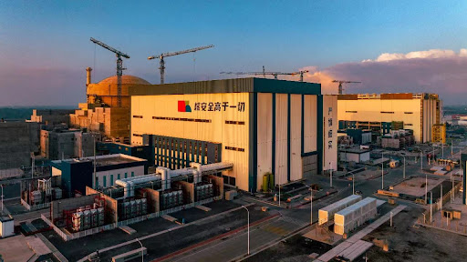

地理位置
中国广西壮族自治区防城港市，是中国西部地区首座核电厂。
堆形与数量
4台百万千瓦级压水堆核电机组。
发电基本原理
防城港核电厂采用先进的压水堆技术，其发电过程也包括以下三大循环：
- 一回路： 核燃料在反应堆中通过核裂变释放出大量热能，高温高压水将热能传递至二回路水，完成第一循环。
- 二回路： 二回路水在蒸汽发生器中吸收热量，变成高压蒸汽推动汽轮机发电，完成第二循环。
- 三回路： 冷凝器利用海水等冷却介质将蒸汽冷凝成水，形成循环水系统，完成第三循环。
功用与贡献
随着广西经济的快速发展，电力需求日益增长，现有的火电和水电无法满足需求。由于水电资源的开发已接近饱和，且缺乏煤炭和天然气等一次能源，核电成为重要选择。防城港核电站一期投运后，每年提供150亿千瓦时清洁电力，推动社会产出增长142亿元，创造12万个就业岗位，促进广西经济发展。与同等规模的燃煤电站相比，防城港核电站每年可减少标煤消耗482万吨，减少二氧化碳排放1482万吨，并大幅降低二氧化硫和氮氧化物排放，对实现温室气体排放控制目标和保护环境具有重要意义。 